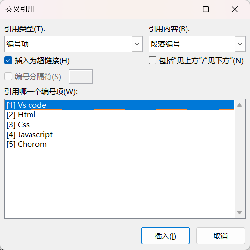

目录
Table Of Content
在引言前插入"分页符"，使其新起一页
在关键词后："引用" → "目录" → "自动目录1"
根据需要修改目录样式
. 如果章节编号从2开始：取消目录所在行的编号，并更新目录，章节编号显示正常
. 如3级目录样式异常，段前段后有行：修改对应的样式TOC3，将间距调整为0，单倍行距，同其它1级目录样式TOC1、2级目录样式TOC2样式保持一致；更新目录，显示正常
其它：页眉、页脚和其它请自行设计；建议放在最后设计
交叉引用
- 删除部分引用后，全选文档，右键选择"更新域"或按F9刷新，保持引用的连贯性
- 参考文献的交叉引用
-
准备参考文献，并设置编号格式如[1]、[2]等等将光标定位在正文某处，不需要选择文本对象，单击"插入交叉引用"，选择引用类型为"编号项"，引用内容为"段落编号"，如图所示。光标处出现对应编号项
- 图片的交叉引用
-
准备文档，其中插入了若干张图片选择某张图片，在下方插入题注，默认标签是"图表"，自定义标签为"fig"，如下图

图片题注 定位光标在文档某处需要引用的地方，插入"交叉引用"，指定类型和内容如下
图片题注 调整引用编号的格式 - 表格的交叉引用
- 操作同上。先为表格添加题注，再插入交叉引用
先插入题注再交叉引用

利用查找替换的"特殊格式" → "任意数字"，将所有引用调整格式为上标；如果参考文献超过10，要额外多进行一次替换

上标：CTRL + Shift + =
下标：CTRL + =